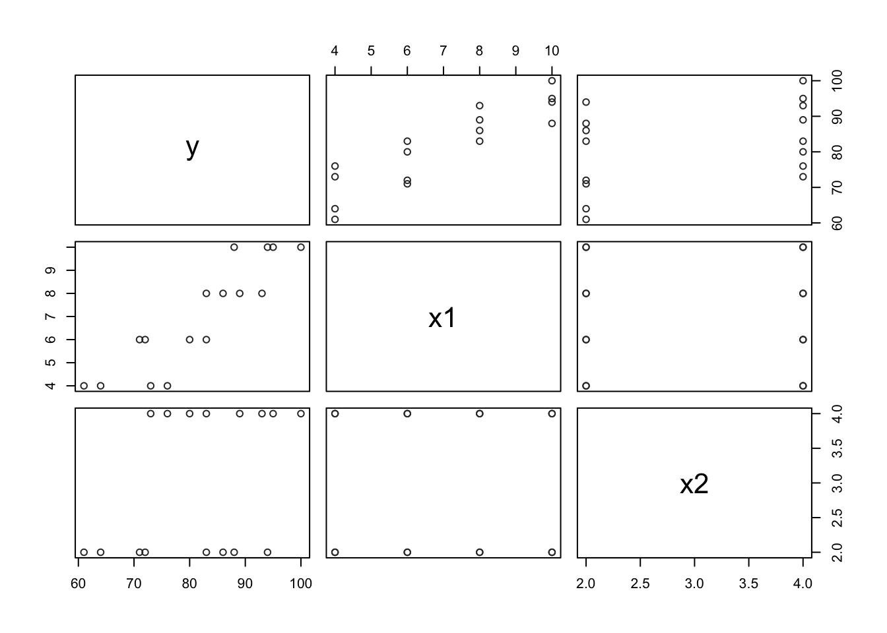
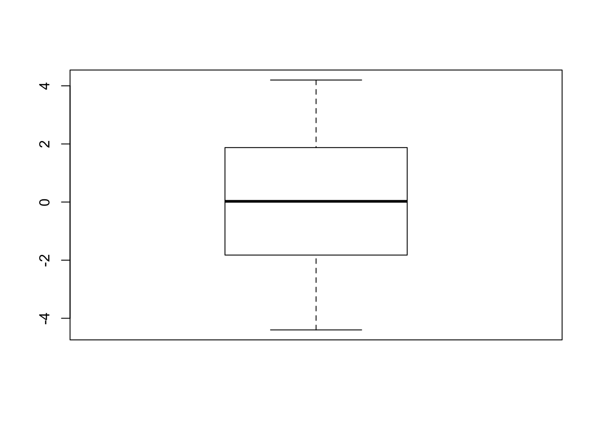
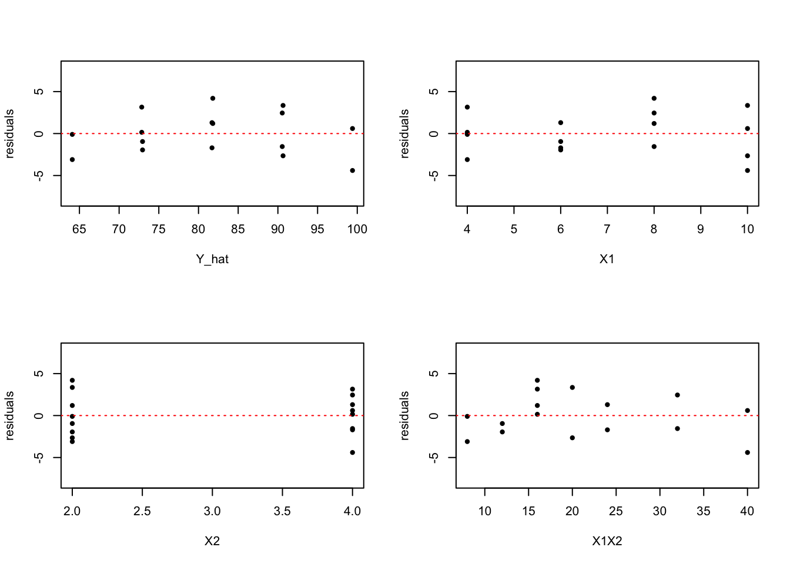

data65 <- read.table("./data/CH06PR05.txt", col.names = c("y", "x1","x2"))library(ggplot2)
pairs(data65, col="gray20")
cor(data65)## y x1 x2
## y 1.0000000 0.8923929 0.3945807
## x1 0.8923929 1.0000000 0.0000000
## x2 0.3945807 0.0000000 1.0000000Information from these diagnostic aids: From the correlation matrix, we can conclude that Y (branding linking) is positively correlated to \(X_1\) (mosture content) and \(X_2\) (sweetness). Moreover, The correlation is stronger between Y and \(X_1\) (0.89) than between Y and \(X_2\) (0.39) and no correlation between \(X_1\) and \(X_2\).
Problem 6.5 (b)
lm.fit = lm(y~x1+x2, data=data65)
summary(lm.fit)##
## Call:
## lm(formula = y ~ x1 + x2, data = data65)
##
## Residuals:
## Min 1Q Median 3Q Max
## -4.400 -1.762 0.025 1.587 4.200
##
## Coefficients:
## Estimate Std. Error t value Pr(>|t|)
## (Intercept) 37.6500 2.9961 12.566 1.20e-08 ***
## x1 4.4250 0.3011 14.695 1.78e-09 ***
## x2 4.3750 0.6733 6.498 2.01e-05 ***
## ---
## Signif. codes: 0 '***' 0.001 '**' 0.01 '*' 0.05 '.' 0.1 ' ' 1
##
## Residual standard error: 2.693 on 13 degrees of freedom
## Multiple R-squared: 0.9521, Adjusted R-squared: 0.9447
## F-statistic: 129.1 on 2 and 13 DF, p-value: 2.658e-09beta=coef(lm.fit)
names(beta) = c("b0", "b1", "b2")
beta## b0 b1 b2
## 37.650 4.425 4.375#Y_hat = beta[1] + beta[2]*X1 + beta[3]*X2\[ \hat{Y} = 37.65 + 4.425*X_1 + 4.375*X_2 \]
The coefficient \(b_1\) represents that when \(X_1\) (mosture content) increasing or descreasing by 1 unit, the Y (branding linking) will increase or descrease by 4.425 unit (under the assumption that the other variables are fixed).
Problem 6.5 (c)
Residuals and boxplot of residuals
residuals = lm.fit$residuals
residuals## 1 2 3 4 5 6 7 8 9 10 11 12
## -0.10 0.15 -3.10 3.15 -0.95 -1.70 -1.95 1.30 1.20 -1.55 4.20 2.45
## 13 14 15 16
## -2.65 -4.40 3.35 0.60boxplot(residuals)
Y_hat = predict(lm.fit)
Y_hat## 1 2 3 4 5 6 7 8 9 10 11 12
## 64.10 72.85 64.10 72.85 72.95 81.70 72.95 81.70 81.80 90.55 81.80 90.55
## 13 14 15 16
## 90.65 99.40 90.65 99.40The above boxplot indicates that the number of positive and negative residuals are about to be equal and no outliers in this data. Moreover, the residuals are evenly distributed and centered around 0. Hence, we can conclude that the regression model fits the data well.
layout(matrix(c(1,2,1,2,3,4,3,4), 4,2, byrow=TRUE))
X1 = data65$x1
X2 = data65$x2
X1X2 = X1*X2
plot(residuals~Y_hat, ylim=c(-8,8), pch=20)
abline(h=0, lty=3, col=2)
plot(residuals~X1, ylim=c(-8,8), pch=20)
abline(h=0, lty=3, col=2)
plot(residuals~X2, ylim=c(-8,8), pch=20)
abline(h=0, lty=3, col=2)
plot(residuals~X1X2, ylim=c(-8,8), pch=20)
abline(h=0, lty=3, col=2)
The upper left plot indicates that the variance of error terms does not vary with the level of Y hat. But there is a systematic pattern in the plot. The same pattern is found in the bottom right plot, which indicats that there is interaction effect.
mystats <- function (X,Y){
# reference : book page 225
XPrime <- t(X) #transposing X
YPrime <- t(Y) #transposing Y
n <- length(Y) #here we assign our n
I <- matrix(0, nrow = n, ncol = n) #we define an n by n
#matrix here that has an entries of 0.
I[row(I) == col(I)] <- 1 #here we assign a value 1 if the ith
#rows is equal to the jth columns.
J <- matrix(1, nrow = n, ncol = n)
#We are almost ready for computation, but before that we need
#to define first our H. To do that lets define the inverse
#first.
XXPrime <- XPrime%*%X #here we define X’X
Inverse <- solve(XXPrime) #here we have (X’X)^(-1)
H <- X%*%Inverse%*%XPrime
# SSR
SSRCen <- H - J/n #here we define (H – J/n)
SSR <- YPrime%*%SSRCen%*%Y
# SSE
SSECen <- I - H #here we define (I – H)
SSE <- YPrime%*%SSECen%*%Y
# MSR
MSR = SSR/(p-1)
# MSE
MSE = SSE/(n-p)
return(list(SSR=SSR,SSE=SSE,MSR=MSR, MSE=MSE))
}p = 3
X <- as.matrix(cbind(1,data65[,2:3]))
Y <- as.matrix(data65[,1])
stats=mystats(X,Y)
stats$MSR## [,1]
## [1,] 936.35stats$MSE## [,1]
## [1,] 7.253846F_star = stats$MSR/stats$MSE
F_star## [,1]
## [1,] 129.0832F_star = summary(lm.fit)$fstatistic[1]
F_star## value
## 129.0832qf(0.99, 2,13)## [1] 6.700965p_value = 1 - pf(F_star,2,13)
p_value## value
## 2.658261e-09lm.fit = lm(y~., data=data65)
X = as.matrix(cbind(1, data65[,2:3]))
MSE = sum(lm.fit$residuals^2)/(nrow(data65)-3)
s_squared_b = MSE * solve(t(X)%*%X)
s_b1 = s_squared_b[2,2]^.5
s_b2 = s_squared_b[3,3]^.5beta1=coef(lm.fit)[2]
beta1## x1
## 4.425beta2=coef(lm.fit)[3]
beta2## x2
## 4.375t_star=qt(0.9975, 13)
t_star## [1] 3.372468beta1_lower = beta1-t_star*s_b1
beta1_upper = beta1+t_star*s_b1
beta1_interval=c(beta1_lower, "upper limit"=beta1_upper)
names(beta1_interval) = c("lower limit", "upper limit")\[ 4.425 \pm 3.3724679 \cdot 0.3011197 \]
beta2_lower = beta2-t_star*s_b2
beta2_upper = beta2+t_star*s_b2
beta2_interval=c(beta2_lower, "upper limit"=beta2_upper)
names(beta2_interval) = c("lower limit", "upper limit")
beta1_interval## lower limit upper limit
## 3.409483 5.440517beta2_interval## lower limit upper limit
## 2.104236 6.645764\[4.375 \pm 3.3724679 \cdot 0.6733241 \]
R_squared = summary(lm.fit)$r.squared
R_adj_squared = summary(lm.fit)$adj.r.squared
R_squared## [1] 0.952059R_adj_squared## [1] 0.9446834lm2.fit = lm(data65$y~Y_hat)
simple.dtm = c(summary(lm2.fit)$r.squared, summary(lm(data65$y~Y_hat))$adj.r.squared)
multiple.dtm = c(R_squared, R_adj_squared)
determination = cbind(simple_determination=simple.dtm, multiple_determination=multiple.dtm)
rownames(determination) = c("R squared", "adj R squared")
determination## simple_determination multiple_determination
## R squared 0.9520590 0.9520590
## adj R squared 0.9486346 0.9446834Y_interval_est_1 = predict(lm.fit, data.frame(x1=5, x2=4),
interval="confidence", level=0.99)
Y_interval_est_1## fit lwr upr
## 1 77.275 73.88111 80.66889Y_interval_est_2 = predict(lm.fit, data.frame(x1=5, x2=4),
interval="prediction", level=0.99)
Y_interval_est_2## fit lwr upr
## 1 77.275 68.48077 86.06923